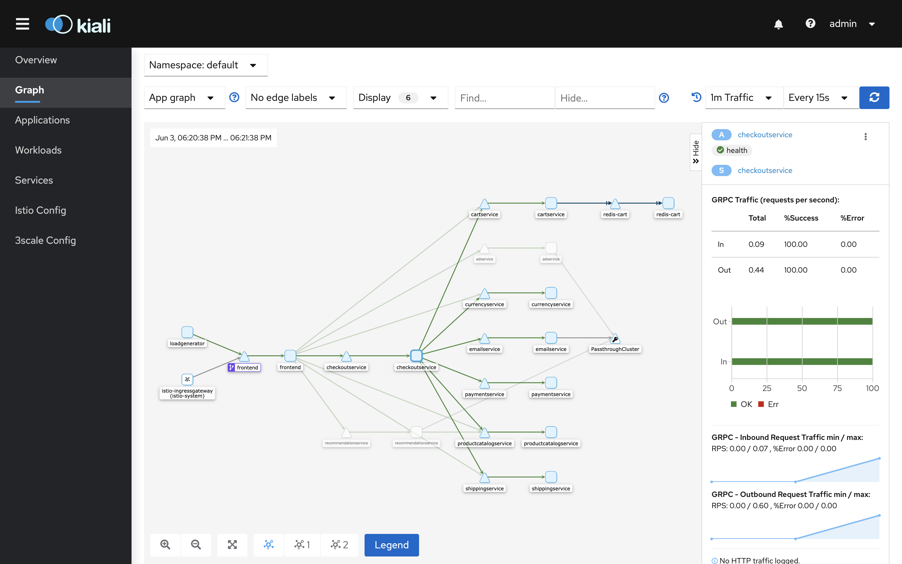

Explore mesh topology in Kiali
This chapter presents how to analyze service mesh topology and configuration using the Kiali Istio addon.
Outline
In this chapter you will learn:
- How to access Kiali dashboard.
- How to analyze service mesh topology and traffic.
- How to examine service mesh configuration.
Walkthrough
Kiali is a management console for Istio service mesh with strong observability, configuration and validation capabilities. It provides a dashboard visualizing the mesh topology including rich information about inter-service dependencies and traffic health (latency, errors). Moreover, Kiali enables inspecting and producing service mesh configuration via a web interface and observing how the updated configuration affects performance of individual application services.
Kiali helps to answer the following questions:
- Which microservices are part of my service mesh?
- How are they connected?
- How are they performing?
- How can I operate on them?
Access the dashboard
Port-forward the Kiali dashboard to your local machine:
$ istioctl dashboard kiali
Your browser should startup automatically and display the dashboard. Otherwise, visit the address: http://localhost:20001.
Login using the default credentials: admin/admin.
Analyze the service graph
After logging in, the dashboard should present the Overview page, similar to:

The page summarizes all Kubernetes namespaces that have services registered in the service mesh. In other words: namespaces that contain pods with Istio proxy.
Click on the graph icon in the default namespace card. The graph icon is in the lower left of the
namespace card and looks like a connected group of circles:

You will be presented with a service graph:

The graph is generated automatically by Kiali from service mesh metrics collected in Prometheus.
The nodes in the graph represent application services, whereas the edges reflect the communication paths between them. Edges coloured in green indicate healthy communication. Edges coloured in a different color (yellow or red) indicate communication issues - we will evaluate such scenarios later on in this workshop.
Now, click on the node representing the checkout service:

The graph should highlight the ingress and egress edges only for the checkout service. This way
we can quickly lookup which services communicate with the selected service, and also which services
the selected service communicates with.
In addition, the dashboards presents basic communication metrics in the box on the right:
- operations per second (for ingress and egress traffic),
- success and error rates.
Now, click on the edge between the checkout service and the email service:

The edge should be highlighted and the dashboards presents the basic metrics for the communication between these two services:
- used protocol (gRPC in this case),
- operations per second,
- success and error rates.
You can turn on the Traffic Animation in the Display settings to get the real-time graph experience:

Small dots represent the traffic intensity. For intensive traffic, the dots are displayed denser and faster.
Examine the configuration
Switch to the Istio Config tab:

The dashboard presents a list of loaded Istio policies. The Type column describes the policy type
(e.g., VirtualService, DestinationRule, Gateway). The Configuration column points the policy
status - whether the pocliy validation suceeded. Note that some of the existing policies generated
warnings. For now, ignore them.
Enter the frontend policy. The dashboard should display the policy summary:

You can switch to the YAML representation of the policy:

It contains the full policy content and allows reloading the policy after modifications in the web editor.
Exercises
- Is the inter-service communication healthy? How do you check that?
- What is the entry-point service of the application?
- What are the clients of the the application?
- Which services communicate with the
currencyservice? - Which services communicate with the
productcatelogservice? - Which services does the
checkoutservice commmunicates with? - What is the request volume (operations per second) for
currencyservice? What are its success and error rates? - What is the request volume (operations per second) for
paymentservice? What are its success and error rates? - What protocol is used on the communication path between the
frontendservice and therecommendationservice? - What protocol is used on the communication path between the
cartservice and theredisservice? - What is the raw content of the mesh gateway policy? Are there any configuration warnings detected?